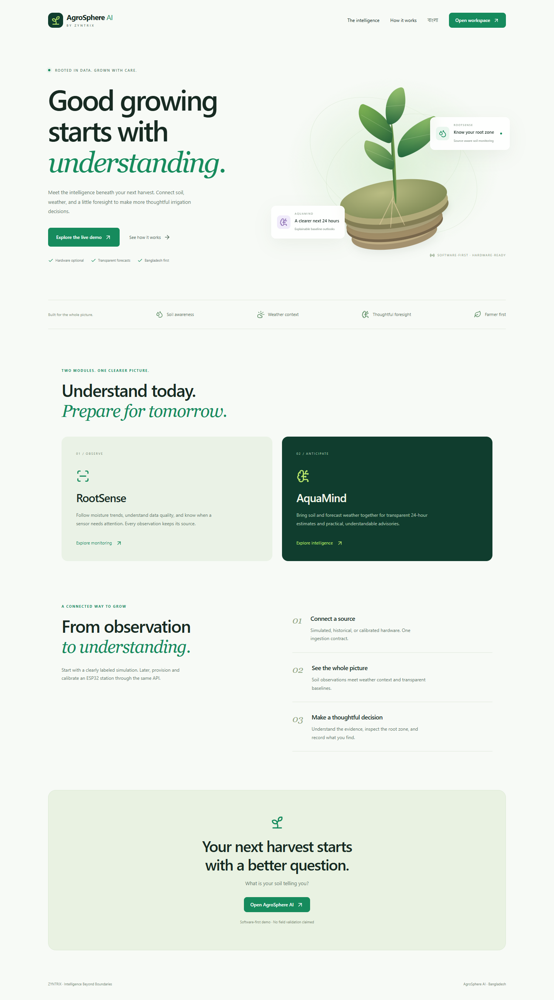
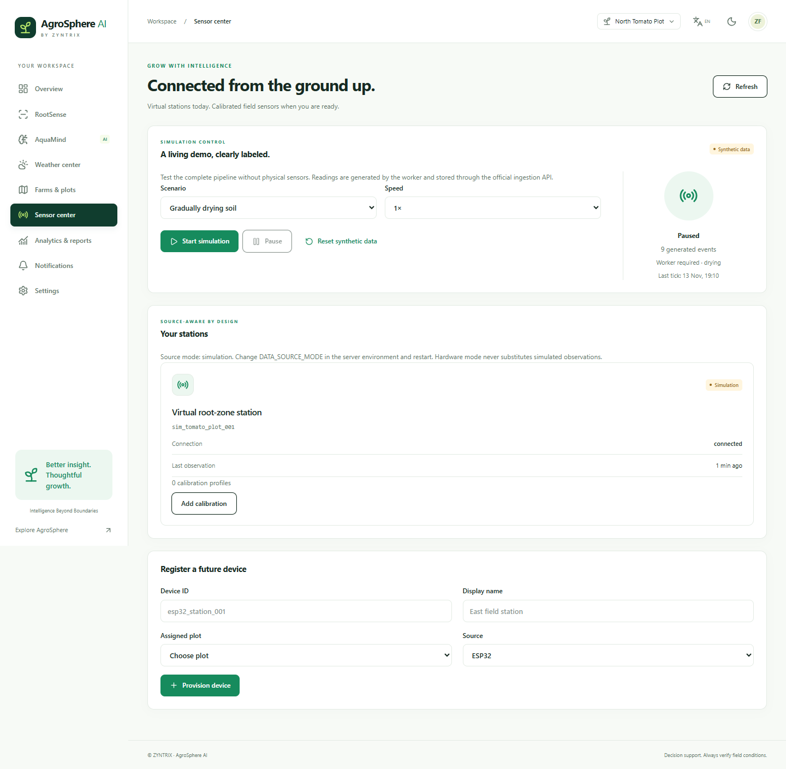
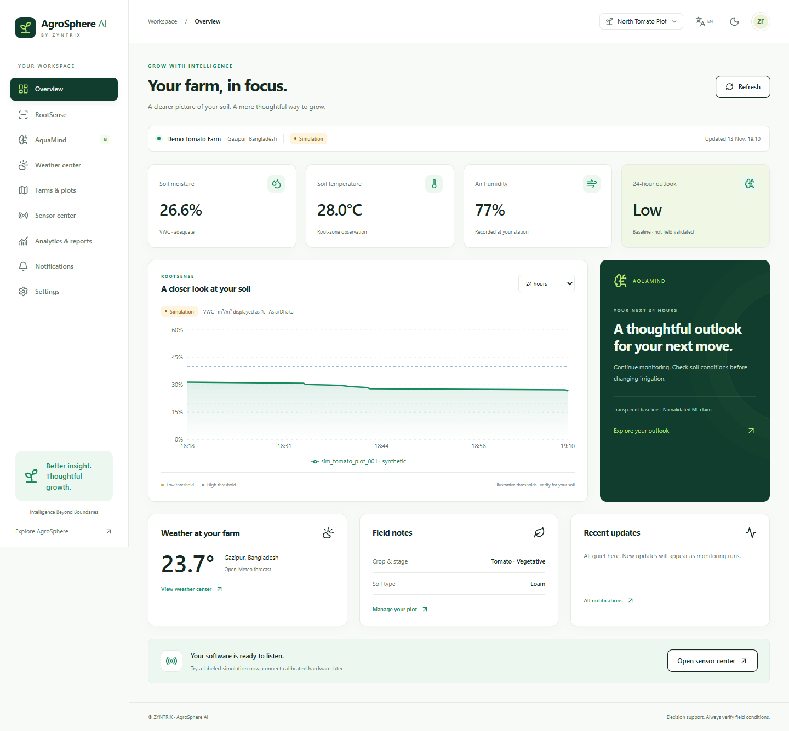
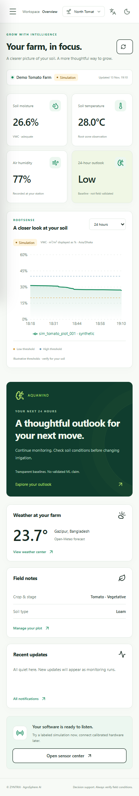

Your step-by-step guide to using ZYNTRIX AgroSphere AI.

01
Observe
See soil readings, their source and their age.
02
Understand
Review weather and an explained 24-hour outlook.
03
Inspect
Check the field and record what you find.
This guide describes the current local software-first application. Screenshots show example simulation data; the values on your screen will change. No physical sensors are needed to try it.
For the application already set up on your Windows computer.
Open Docker Desktop. Wait until its engine is running. You do not need to open an administrator PowerShell window.
Open PowerShell and paste these two lines.
cd "D:\bracu mail\Ai contest 2026\agrosphere-ai"
docker compose up -d
Open your browser. Enter http://127.0.0.1:3000. Select Open workspace or Explore the live demo.
Leave the services running while you use the app. The -d option runs them in the background; closing PowerShell does not stop them.
Stop and restart later
From the same project folder, stop the application with:
docker compose stop
Restart it with docker compose up -d. Normal stopping preserves your saved data. You do not need to repeat installation or generate new passwords.
AgroSphere AI
ZYNTRIX / USER GUIDE
02 / YOUR FIRST FIVE-MINUTE DEMO
Watch the soil story change.
Try a complete demonstration without connecting hardware.

Choose a plot. Use the plot selector in the top bar. For your first try, choose North Tomato Plot in the seeded Demo Tomato Farm.
Open Sensor center. In the Simulation control panel, choose Gradually drying soil, set speed to 15×, and click Start simulation.
Open Overview or RootSense. Wait about 15 seconds for the next dashboard refresh, or click Refresh. Check that the source says Simulation and the observation time is recent.
Try an irrigation response. Return to Sensor center, select Irrigation event, and click Start simulation again to apply the new scenario. Return to Overview and refresh to see the moisture rise.
Read the explanation, then pause. Open AquaMind to review the recalculated outlook. Return to Sensor center and click Pause when finished.
AgroSphere AI
ZYNTRIX / USER GUIDE
03 / MAIN DASHBOARD
Read the whole picture first.
Overview brings observations, weather and guidance together.

1. Plot, source and time
Check the selected plot, the source badge and the updated time before interpreting any number.
2. Observation cards
Read soil moisture, soil temperature and humidity. A dash means the measurement is unavailable, not zero.
3. Trend and outlook
Use the moisture chart to see change over time. The AquaMind card summarizes what to consider next.
4. Context and updates
Weather, crop/soil details and notifications add context. Use their links to open the detailed pages.
AgroSphere AI
ZYNTRIX / USER GUIDE
04 / ROOTSENSE
Inspect the observations.
Use RootSense for history, measurement quality and field feedback.
Open RootSense and confirm the selected plot. The latest moisture value and reading age belong to the plot shown in the top bar.
Choose a chart range. Select 24 hours, 7 days, 30 days, or Custom range. For Custom range, enter the From and To dates/times.
Check Observation quality. Review the status, reading age, quality flags and threshold notes. Chart labels identify measurement sources.
Record an inspection. In What did you observe?, select adequate, dry, wet or sensor issue; enter notes and click Save field observation.
Status or signal
What it means for you
Adequate / low / excessive
The reading is compared with the plot’s configured limits. Simulation limits are illustrative.
Monitoring
Observations can be displayed, but reviewed limits may not be available. Do not infer a validated risk category.
Stale / unavailable
A recent usable observation is missing. Check the station or simulation before relying on the outlook.
Uncalibrated / review required
The moisture value or its calibration needs attention. Ask the person managing the sensor.
AgroSphere AI
ZYNTRIX / USER GUIDE
05 / AQUAMIND
Read the outlook and its reasons.
AquaMind estimates conditions about 24 hours ahead; it does not measure the future.
Latest valid soil observation
+
Available weather context
→
Explained 24-hour estimate
Open AquaMind. Check the source and validation label, then compare Current VWC, Persistence +24h and Water balance +24h.
Read the recommendation. The guidance is intended to support inspection and judgement. It is not an instruction to apply a fixed amount of water.
Read “Why this outlook?” Review the listed evidence, such as declining moisture, forecast rain or weather being unavailable.
Check limitations. Look at the active method, model version and validation status. The baseline comparison shows estimates, not accuracy scores.
Method
Plain-language meaning
Persistence baseline
Assumes moisture stays at the latest valid observed value. It can work without usable weather.
Water-balance baseline
Uses a simplified estimate of rain and crop water demand with the plot’s soil/root-depth settings.
Validated ML
Not currently established. A credible measured dataset and a proper evaluation are needed before making this claim.
Example Bengali guidance: সেচের সিদ্ধান্ত নেওয়ার আগে শিকড়ের এলাকার মাটি পরীক্ষা করুন এবং সেন্সরের পাঠ যাচাই করুন।
AgroSphere AI
ZYNTRIX / USER GUIDE
06 / WEATHER CENTER
Add the weather context.
Weather forecasts are linked to the farm of your selected plot.
Open Weather center. Confirm the location name. If it is wrong, check which plot is selected and edit the associated farm’s coordinates in Farms & plots.
Review the current summary. Read temperature, wind, humidity and precipitation alongside the provider and last-update information.
Scroll through the next 24 hours. Hourly cards show forecast temperature, rain, rain probability where available, and ET0.
Review the week ahead. Daily cards summarize high/low temperature, rainfall and reference evapotranspiration.
Label
How to interpret it
Rain forecast / probability
Expected rainfall and its forecast probability; these are not observations from a soil sensor.
ET0
A reference signal of atmospheric water demand used as one input to the simplified estimate. It is not an amount you should automatically irrigate.
Updated / cached / outdated
Weather may be served from a saved forecast. Check its age rather than assuming every refresh downloads a new forecast.
Weather unavailable
The app may use a sufficiently recent saved forecast, or continue with persistence-only estimates. It does not invent replacement weather.
AgroSphere AI
ZYNTRIX / USER GUIDE
07 / FARMS & PLOTS
Keep the field context correct.
Farm records determine location. Plot records describe the crop and soil.
Create or edit a farm. Open Farms & plots. Enter a farm name, location label, latitude and longitude. Click Save farm. Use Edit farm to update an existing record.
Create or edit a plot. Choose its farm, enter its name, crop, growth stage, soil type and planting date. Review the rooting-depth, Kc, VWC-limit and field-capacity fields; click Save plot.
Select the plot in the top bar. This selection determines which observations, weather, advisories and records you see elsewhere.
Record irrigation that actually happened. In Irrigation records · selected plot, enter the time, applied amount in mm, and notes. Click Record irrigation. Review the table underneath.
Three records that should not be confused
Simulation event
An artificial change used to test the app.
Irrigation record
Your report of water actually applied.
Field observation
Your inspection note about soil or a sensor issue.
AgroSphere AI
ZYNTRIX / USER GUIDE
08 / SENSOR CENTER
Choose the situation to test.
The simulation panel works before physical sensors are installed.
Scenario
Expected software behaviour
Gradually drying soil
Successive synthetic moisture readings decline.
Normal variation
Moisture varies gently around a demo level.
Rainfall event
Synthetic moisture increases; the weather forecast is unchanged.
Irrigation event
Synthetic moisture increases; no pump is activated.
Persistently wet soil
High illustrative moisture tests excessive-moisture handling.
Sensor disconnection
No new readings arrive. Existing observations remain visible and eventually become stale.
Stale sensor readings
Old timestamps test stale-data messages.
Invalid readings (rejected)
Out-of-range values are rejected. An ingestion-error message is expected for this test.
Use the controls
Start simulation applies your selected scenario and speed. Pause stops generation. 15× produces events faster, but does not move timestamps into the future. Dashboard refresh is a separate action.
Adding real equipment later
Device cards show identity, source, connection state and observation age. Register a future device creates a station and shows its private token once. Give that token only to the person provisioning the device. Calibration profiles need physical soil measurements; saving a profile does not validate a sensor.
Hardware/historical/hybrid source-mode changes are installer settings. Hardware mode must not replace missing sensor data with a hidden simulation.
AgroSphere AI
ZYNTRIX / USER GUIDE
09 / ANALYTICS & NOTIFICATIONS
Keep a record you can review.
Use observations and feedback to explain what happened.
ANALYTICS & REPORTS
Review and export
Open Analytics & reports for moisture trends, source counts, available evaluation results and recorded irrigation.
Select Export CSV to download observation records for the selected plot. The export retains source and unit information.
Model comparison metrics appear only after a measured-data evaluation is available. An empty report is not zero error or perfect accuracy.
NOTIFICATIONS
Read the updates
Open Notifications to review soil, missing-data and available weather warnings. Confirm that the selected plot is correct.
Use Read to acknowledge an unread notification. Marking it read does not repair a sensor or change soil conditions.
Warnings can reflect the time they were created. Recheck current status before acting.
After inspecting the field
Record what you saw in RootSense. Use the feedback form for dry/wet/adequate soil or a sensor issue.
Record actual irrigation separately. Use Farms & plots for the selected plot’s irrigation history.
Return to Overview. Refresh and check the latest reading time, source and advice instead of relying on an old notification.
AgroSphere AI
ZYNTRIX / USER GUIDE
10 / PREFERENCES & MOBILE
Use a workspace that suits you.
Language, appearance and plot preferences are saved in your browser.

English / Bengali
Use the language icon in the top bar, or open Settings → Language. Navigation, page headings and key advisories switch between English and Bengali. Some technical and administrative form text remains in English.
Light / dark appearance
Use the moon/sun icon in the top bar, or Settings → Appearance. The choice is remembered on this browser.
Notification summaries
In Settings, toggle Show notification summaries to show or hide the dashboard summary. This does not switch off background monitoring or erase saved notifications.
Smaller screens
Use the menu icon at the top left to open navigation. Select a page, then use the plot selector to confirm which plot you are viewing.
AgroSphere AI
ZYNTRIX / USER GUIDE
11 / TROUBLESHOOTING & QUICK REFERENCE
When something does not look right.
Check location, services, source and freshness before changing settings.
Problem
What to try
PowerShell cannot find agrosphere-ai
Use the full quoted folder path from page 2, not a relative folder name from System32.
Docker reports engine/daemon unavailable
Open Docker Desktop, wait for the engine, then run docker compose up -d again from the project folder.
Browser cannot open the app
Use http://127.0.0.1:3000 on this PC. Check that Docker services are running.
No readings or no new chart points
Choose the right plot, open Sensor center, start a valid scenario and refresh. Paused/disconnected/invalid scenarios may not add usable points.
An old reading remains after “stale” starts
The newest existing reading can remain current until an older injected timestamp is no longer competing with it. For an isolated demo, reset synthetic data first, then start the stale scenario.
Source is Hardware but nothing appears
Real readings are required in hardware mode. Ask the installer to check registration, credentials, connection and calibration.
Weather missing / risk unknown
Review freshness and calibration messages. The app can fall back to persistence or withhold a risk judgement; inspect the field.
No ML accuracy numbers
Expected until credible measured data has been evaluated. Simulation is not validation evidence.
Commands to keep
cd "D:\bracu mail\Ai contest 2026\agrosphere-ai"
docker compose up -d # Start / restart
docker compose ps # View service status
docker compose stop # Stop; keep saved data
If the problem continues, save the exact error text and ask the person maintaining the application. Never share a device token, administrator token or the contents of your .env file.